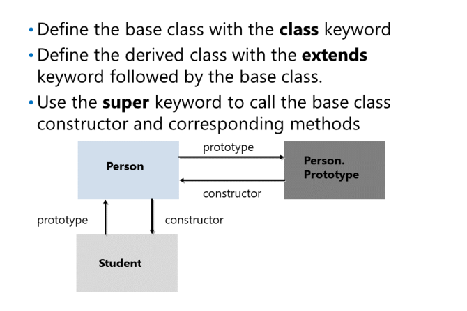

Wdrażanie enkapsulacji
Javascript używa techniki znanej jako closures to
achieve encapsulation.
Zamknięcia umożliwiają definiowanie enkapsulowanych zmiennych dla obiektu i eksponowanie zmiennych za pomocą zestawu
funkcji publicznego dostępu. Aby zaimplementować zamknięcia, zdefiniuj funkcję konstruktora i dodaj następujące elementy
1.Deklaruj zmienne bez użycia this. Brak tego słowa kluczowego oznacza, że
zmienne mają zasięg lokalny i są widoczne tylko w funkcji konstruktora.
2.Zadeklaruj metody pobierania i ustawiania wartości zmiennych. Podczas deklarowania użyj this, aby upewnić się, że są widoczne dla kodu zewnętrznego.
Poniższy przykład pokazuje, jak używać zamknięć, aby uzyskać enkapsulację. Zmienne nazwy i wieku
są w zasadzie prywatne dla obiektów Person, podczas gdy getName (), getAge (), setName () i setAge ()
metody są publiczne.
Wdrażanie dziedziczenia przez łączenie prototypów
W
JavaScript, implementujesz dziedziczenie poprzez zdefiniowanie
obiekt, który rozszerza istniejący obiekt.
Możesz użyć kilku języków JavaScript
mechanizmy wdrażania dziedziczenia. Możesz
użyj funkcji Object.create, aby zaimplementować
forma dziedziczenia, która obsługuje funkcje współdzielone
i dane instancji.
1. Zdefiniuj konstruktor podstawowy i prototyp.
2. Zdefiniuj konstruktor pochodny.
3. Ustaw właściwość prototypu konstruktora pochodnego jako instancję obiektu podstawowego. To
zapewnia, że obiekt pochodny ma dostęp do wszystkich elementów zdefiniowanych w prototypie podstawowym.
4. Zresetuj właściwość konstruktora w wyprowadzonym prototypie, aby odwoływał się z powrotem do wyprowadzonego
konstruktor.
Poniższy przykład pokazuje, jak zaimplementować dziedziczenie w JavaScript za pomocą łączenia prototypów
Implementacja dziedziczenia w klasach ES2015

podczas definiowania class
możemy zdefiniować dziedziczenie za pomocą
extends, po którym następuje obiekt podstawowy. Na
ważnym dodatkiem w klasie ES2015 jest super
, które służy do wywołania klasy podstawowej
konstruktor lub odpowiednie metody.
Poniższy przykład pokazuje, jak zaimplementować
dziedziczenie w klasach ES2015.
Dodanie funkcjonalności do istniejących obiektów
Możesz użyć prototypów do rozszerzenia
funkcjonalność istniejących obiektów, w tym
obiekty wbudowane zdefiniowane jako część standardu
Język JavaScript.s
Aby rozszerzyć funkcjonalność obiektu, wykonaj następujące czynności
te kroki:
• Zdobądź prototyp obiektu.
• Przypisz nową właściwość do obiektu, do
reprezentują nową funkcję, którą chcesz
dodać.
Poniższy przykład pokazuje, jak dodać funkcjonalność do istniejącego obiektu. Kod definiuje a
funkcja konstruktora o nazwie Point, reprezentująca punkt współrzędnych o właściwościach x y. Kod
następnie dodaje metody o nazwach moveBy() i moveTo() do prototypowego obiektu Point i pokazuje, jak te
metody te są dostępne we wszystkich obiektach Point.
Korzystanie z metody Zastosuj z funkcjami ogólnymi
Oprócz zdefiniowania prototypu, który jest specyficzny dla danego typu, możesz także tworzyć funkcje ogólne, które sam wybierzesz
można użyć do implementacji wspólnej funkcjonalności dla obiektów prawie dowolnego typu. Rozważ następujące proste
funkcja globalna, która ustawia właściwość koloru obiektu na wartość określoną jako parametr:
function SetColor(color) {
this.color = color;
}
Poniższy przykład pokazuje, jak wywołać
Metoda SetColor dla obiektu Point, jak zdefiniowano w poprzednim przykładzie kodu w tym temacie:
const p1= new Point(100, 200);
...
SetColor.apply(p1, ["red"]);
alert(p1.color); // Displays "red"